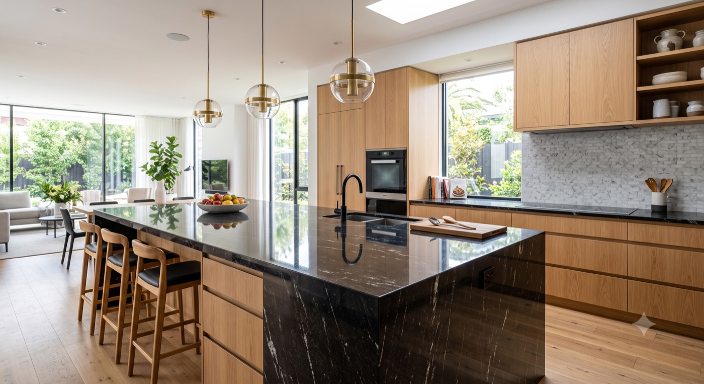
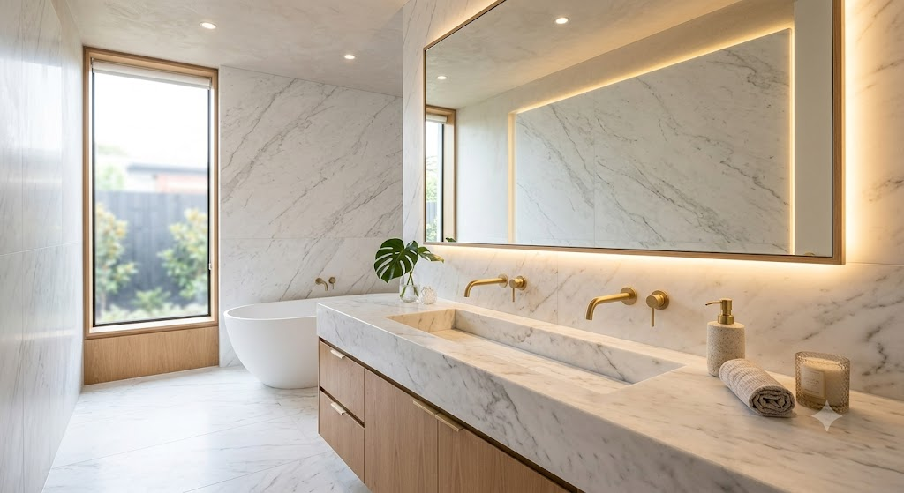
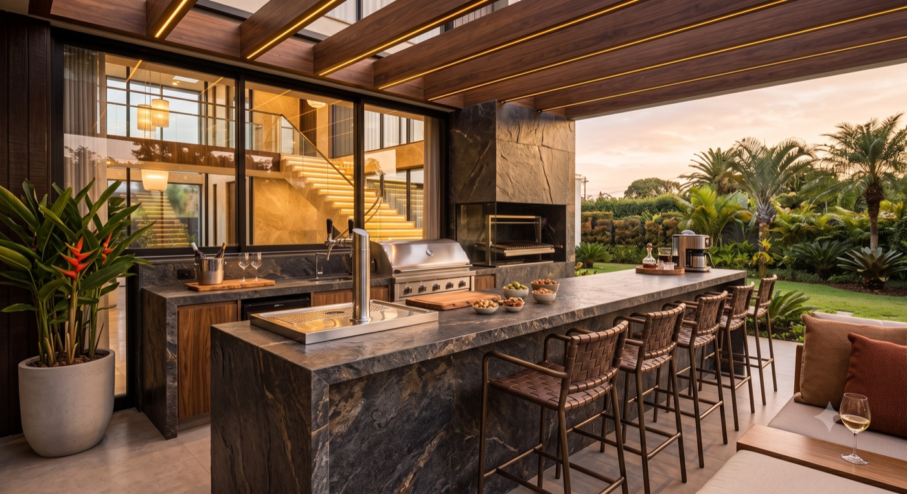
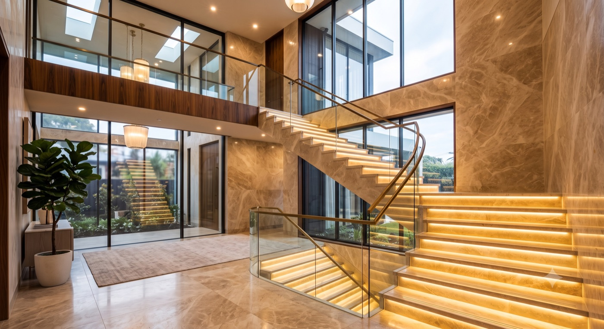
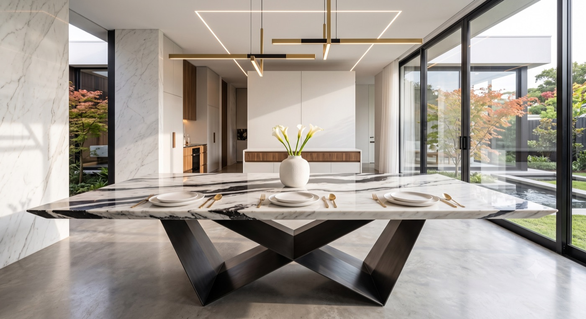
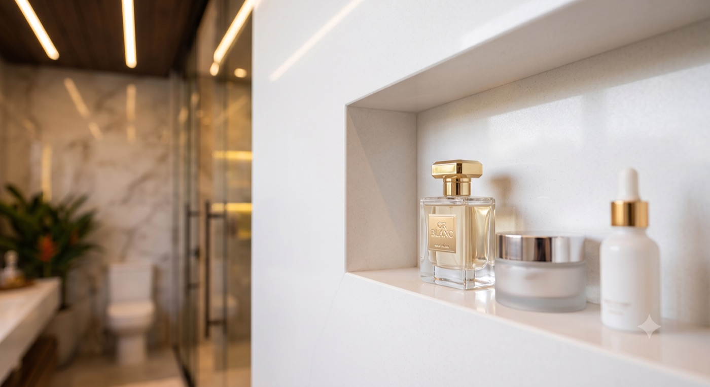
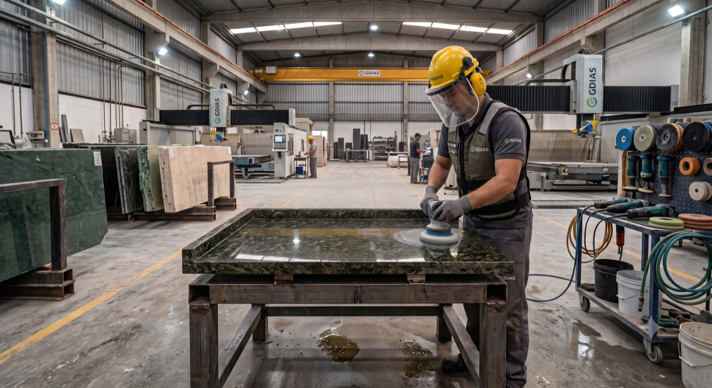
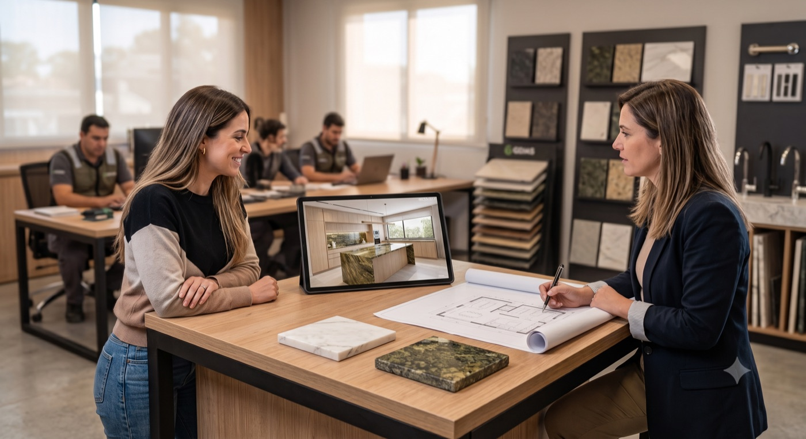

Itapetininga · SP — desde a bancada ao acabamento
Selecionamos as chapas, cuidamos do corte e entregamos a instalação com o acabamento que sua obra merece. Nacionais e importados, com mais de 10 anos de experiência no ofício.
Resultados que falam por nós
Em pouco mais de 2 anos de existência, já são mais de 2.100 orçamentos gerados — e mais de 1.900 viraram venda. São 9 em cada 10 clientes que comparam e escolhem a G.Dias.
Dados atualizados em julho de 2026.
Bem-vindo(a)
Na G.Dias Marmoraria, acreditamos que o melhor atendimento nasce do equilíbrio entre qualidade, prazo e preço justo. É assim que conduzimos cada projeto: com material de procedência, corte preciso e instalação cuidadosa.
Nosso trabalho começa muito antes da instalação — na escolha da chapa certa, na medição correta e na conversa franca sobre prazos e valores. O resultado é uma peça que se encaixa exatamente onde deveria.
"O melhor em mármores e granitos, com atendimento que respeita o seu tempo."
O melhor para você
Uma variedade enorme de cores e padrões exclusivos, selecionados para combinar com o estilo do seu ambiente.
Equipe com mais de 10 anos de experiência no mercado de mármore e granito, do corte ao acabamento final.
Faça um orçamento com a gente e conheça condições de pagamento pensadas para caber no seu projeto.
Nossos serviços
Trabalhamos com mármore, granito e outras pedras naturais em qualquer ambiente da sua casa ou empreendimento.
Corte e acabamento sob medida, com furos para cuba e cooktop.
Bancadas, boxes e revestimentos em mármore e granito.
Valorize a entrada do seu imóvel com pedra natural.
Degraus, soleiras e espelhos com acabamento antiderrapante.
Acabamento preciso para portas e janelas.
Tampos personalizados para mesas, aparadores e balcões.
Recuperamos o brilho de pedras já instaladas.
Da ideia inicial ao projeto executivo, com acompanhamento próximo.
Inspirações
Uma seleção de ambientes para inspirar você: veja o que o mármore e o granito podem fazer pela sua casa e traga sua ideia para conversarmos. Imagens ilustrativas.








Contato
A satisfação de nossos clientes é fundamental — estamos à disposição para tirar dúvidas e fechar seu orçamento.